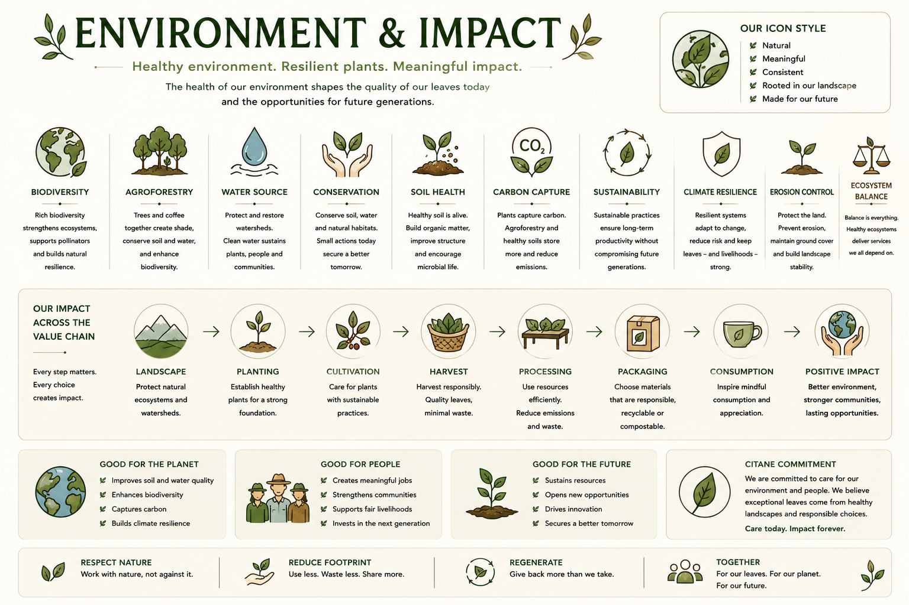

Ten environmental concepts relevant to Buna production, from biodiversity and agroforestry to traceability and fair value.

Tap image to view full board.
Citane is grown in an agroforestry system — Arabica Chandragiri beneath rubber canopy at Thumpassery Estate, Karavaloor. This system supports biodiversity, provides shade, and sequesters carbon. Environmental impact is an active area of documentation, not a marketing claim.
The variety of plant and animal species in and around the farm. Healthy biodiversity supports pollination, pest control, and soil life. Shade systems like Citane's rubber canopy support greater biodiversity than monoculture.
None →Growing coffee plants within a tree canopy — integrating agriculture and forestry. Citane's rubber shade system is an agroforestry model. Provides multiple benefits: shade, income diversification, carbon sequestration.
None →The deliberate use of tree canopy to regulate light, temperature, and moisture for coffee plants below. Rubber trees at Thumpassery provide the shade layer. Shade type affects leaf character.
None →The total greenhouse gas emissions associated with producing Citane leaf — from land preparation through processing and transport. Coffee leaf tea has a significantly lower footprint than coffee bean processing.
None →The water consumed in growing and processing. Leaf tea uses less water than wet-process coffee. Monitoring water use and reducing waste in processing is a specific Citane commitment.
None →Organic carbon stored in soil — a measure of soil health and a factor in climate mitigation. Agroforestry systems, mulching, and reduced tillage all contribute to soil carbon accumulation.
None →Coffee leaf is often a by-product of pruning that would otherwise become waste. Buna converts agricultural residue into a valuable product. Processing waste (stems, off-quality leaf) has compost potential.
None →Ensuring that farmers receive a price that reflects the labour, knowledge, and quality they bring to the leaf. Without fair value at the farm level, quality leaf production is not sustainable.
None →The ability to follow the leaf from a specific farm block through processing to the final cup. Traceability supports quality improvement, accountability, and fair value claims.
None →The commitment that Buna production actively improves the landscapes and communities it involves — in soil health, farmer livelihoods, biodiversity, and knowledge sharing.
None →Environmental claims should be specific and verifiable. General sustainability language without underlying data is not useful. Each claim in this section is based on either documented research or Citane's own operational practice — marked accordingly.